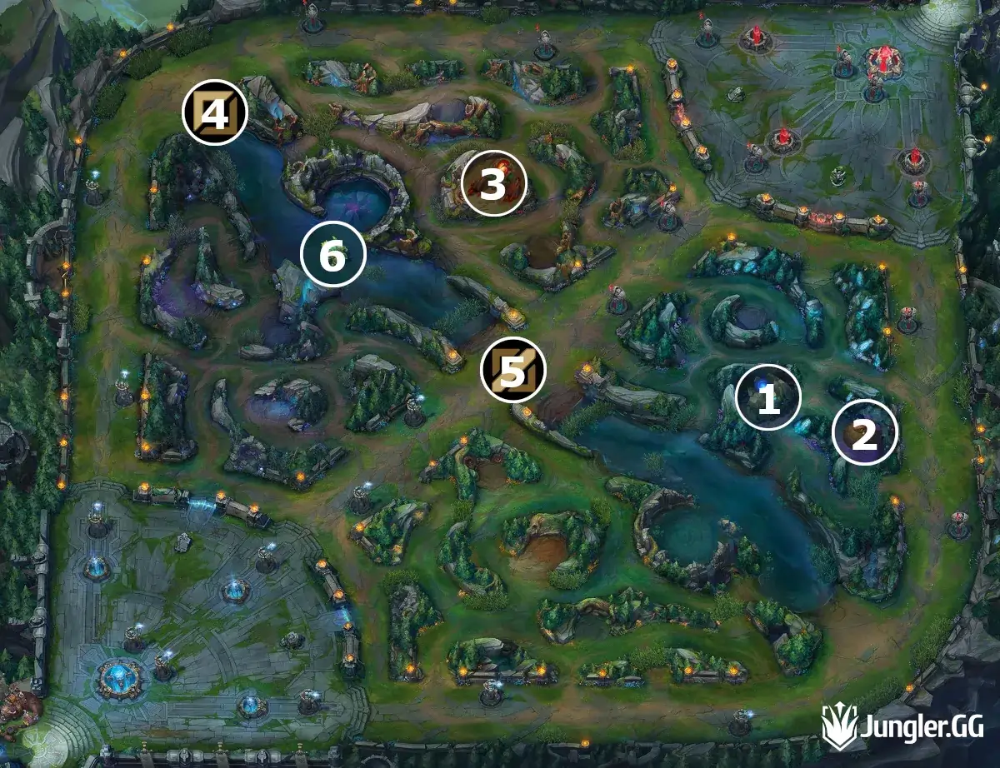
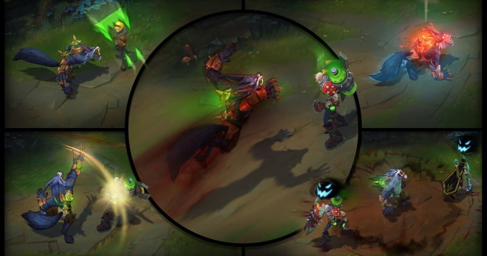
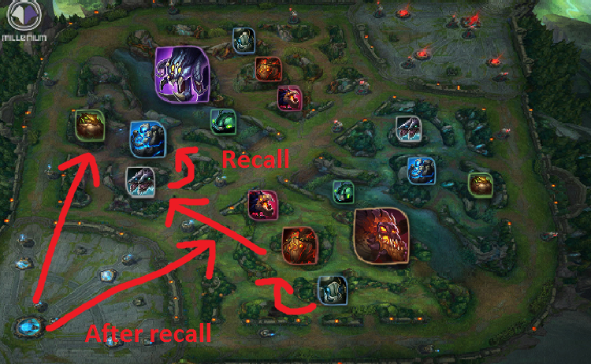

Erfahre mehr über die besten Jungle-Pfade, die Warwick nutzt, um Gegner effektiv zu überlisten und seine Ressourcen zu maximieren.
Dieser Pfad ermöglicht es Warwick, seine Ressourcen schnell zu maximieren und gleichzeitig die Sicherheit zu wahren. Starte mit den Krabben und arbeite dich zu den größeren Monstern vor.
Wenn du dich für einen aggressiveren Ansatz entscheidest, kannst du diesen Pfad wählen, um früh Druck auf die Gegner auszuüben und schnelle Ganks zu ermöglichen. Beginne in der Nähe des Gegners und gehe dann in die gegnerische Jungle-Seite.
Dieser Pfad konzentriert sich mehr auf das Farmen von Minions und das Maximieren von Warwicks Gold und Erfahrung. Er bietet eine sichere, aber etwas langsamere Option für das Jungle-Spiel.
